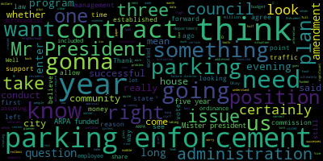
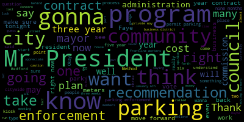

AI-generated transcript of City Council 12-07-21
English | español | português | 中国人 | kreyol ayisyen | tiếng việt | ខ្មែរ | русский | عربي | 한국인
Back to all transcripts
[Caraviello]: All right, everybody ready? Good evening, everyone. The 39th regular meeting of the Medford City Council, December 7th, 2021. Mr. Clerk, please call the roll. Councilor Bears? Present. Councilor Falco?
[Hurtubise]: Present. Vice President Knight? Present. Councilor Marks? Present. Councilor Morell? Present. Councilor Strapelli? Present. President Caraviello? Present.
[Caraviello]: Please rise and slip the flag.
[Falco]: I pledge allegiance to the flag of the United States of America, and to the Republic for which it stands, one nation under God, indivisible, with liberty and justice for all.
[Caraviello]: Okay. Motions, orders, and resolutions. 21-627, offered by Councilor Falco, be it resolved that the traffic engineer evaluate the recent traffic signal change at the intersection of Harvard Street and Mystic Avenue in the interest of public safety.
[Falco]: Councilor Felder. Thank you, Mr. President. After this resolution tonight, I received a number of calls from residents on Harvard Street regarding a change that they recently made at the intersection of Harvard and Mystic Ave. And what's happening is a lot of the cars are backing up and the queues going all the way down Harvard Street. It's virtually impossible to get out of your driveway. There's been some, from what I'm hearing, numerous near accidents. And I'm just asking that the traffic engineer just take a look at this and and actually contact the neighbors as well to get their input. I'm not sure how much input was gathered from the residents before they made this change, but it's a change that has impacted the neighborhood. And I just wanted to bring that forward. And I ask that this be moved to the traffic engineer for further review and move approval. Thank you.
[Nina Nazarian]: Recording in progress.
[Knight]: Vice president night. Mister president, thank you very much. I think the sponsor this resolution for bringing the matter forward. I do believe this is something that this council discussed a couple years back when the casino first opened. As part of mass thoughts plans with the opening of the casino. I believe that they took out of the street and they made the left hand lane going towards the middle of all left him turn only. And that's what's created a bunch of congestion in the neighborhood, Mr. President. And I second Councilor Falco's resolution. I think this is something that needs to be addressed. It's been going on for far too long. And the left-hand turn only lane has created quite a bit of disruption in the neighborhood, and it's something that needs to be addressed.
[Caraviello]: So on the motion by Councilor Falco, seconded by Vice President Knight. All those in favor? Aye. All those opposed? Motion passes. 21628 offered by Councilor Falco. May it be resolved that the DPW repair the road in front of 31 Wildwood Road in the interest of public safety. Councilor Falco.
[Falco]: Thank you, Mr. President. I received a call from a resident on Wildwood Road regarding, back a few years ago, there was some major type of pipe repair. I believe it was, with the street. And what they did is they actually stored, they used actually wildwood as a staging area where they stored the pipes before they installed them and over time, I guess they were there for a while, over time what they did is they left kind of like a depression in the road, it's not like a pothole, but the road slopes off. in front of 31 Wildwood. So when it rains now, there's a significant say puddle that runs pretty much the length of 31 Wildwood road. So I'm asking that the DPW, if they could go by and just fill that depression in front of Wildwood road in the interest of public safety and to ensure that the city, the street drains properly.
[Caraviello]: Thank you. Move approval. Any further discussion? Second on the motion by Councilor Falco, seconded by Councilor Scarpelli. All those in favor? Aye. Motion passes. Petitions, presentations and similar matters. 21629, petition for a common picture license by Serena Nazaro, 14 Putney Circle, Billerica, Mass, 01821, Forest Center Enterprises, Inc., doing business as Petey's Pizza, 336 Austin Avenue, Medford. Serena, are you on the call here somewhere?
[SPEAKER_13]: Oh. She should be on Zoom. Yes, she's here. Are you going to speak for her, Mr. Beacon? No, she can speak. If you have any questions, she can, I just wanted to interview her. Okay. Ms. Nazaro, are you here?
[SPEAKER_10]: Yes, I'm here.
[Caraviello]: How are you, Ms. David? I'm doing well, thank you. Could you give us your name and address on the record, please?
[SPEAKER_10]: I'm sorry, what was that?
[Caraviello]: Could you give us your name and address on the record, please?
[SPEAKER_10]: Yep, it's Serena Nazaro, 14 Putney Circle, Bill Rickenmass, 01821.
[Caraviello]: Thank you. At this point, I'll turn this over to the licensing chairman, which is Councilor Scarpelli.
[Unidentified]: Thank you, Mr. President.
[Scarpelli]: It looks like it's a changeover from what was the expresso pizza on Boston Ave. And it looks like our petitioner is Peony's Pizza, a very well-known and reputable business in neighbor communities, correct? And everything I see here, Mr. President, is in order. The reputation of this company is a very positive one, and I move approval.
[Caraviello]: Any discussion? So all in the motion for approval by Councilor Scarpelli, seconded by Vice President Knight. All those in favor? Aye. Aye. Opposed? Motion passes. Congratulations and we'll hope to see you for some pizza very soon.
[SPEAKER_10]: Thank you very much. Have a good night.
[Caraviello]: Before we go to the next communication from the mayor, I'd like to introduce our new parking director, Faye Morrison. Faye, if you'd like to get up and give us a little brief history about yourself and what your plans are before we get into the stuff that you're looking for.
[Faye Morrison]: I come out of, before I was here, I worked at Newton, did the same thing for Newton that I'm doing for you, creating a department. So far, it's been very exciting. It's been a lot of fact-finding work for you and a lot of cooperation with Reef Republic. We're still having some meetings about the transition, obviously, but we've posted jobs. I've got those descriptions done and posted. We've actually begun to hire an interview, which is good. Tonight, hopefully it will go well because without those systems in place, I can't finish building this department. So that's why I'm here before you tonight. I've been in transportation for a long time in various different capacities, but most recently as the parking manager for the city of Newton for seven years. And I've been here about six weeks. Everyone has been helpful. eager. And I wish I could tell you that this is going to be a quick, pretty process. It's going not going to be terribly quick. There are some things that need to be built first before I can start adding on to the things that are needed. But we're going to get there. And I think we're going to get there because the city has been is really invested in doing this and has supported me. I can't thank the mayor enough for supporting me doing it. Well, we could do we could do it badly. I think We've had, I think Medford's had enough of that. I'd like to do it well and have a good solid parking system that when I retire, that the city is proud of and that will go on and work and be profitable for you after I'm gone. So that's my goal.
[Caraviello]: Thank you. Anybody have any questions for Ms. Morrison before we do the quick communication from the mayor?
[Faye Morrison]: Welcome.
[Caraviello]: Thank you so much. Okay. Communications from the mayor. 21630. Mr. President and Councilors, I respectfully request and recommend that the City Council approves the following five-year contracts after a three-quote process conducted by the parking director for a parking data management system in a truck-car rental lease. It is the intention of the City to enter a five-year agreement with GT Techno USA Corporation in enterprise fleet management Inc. Master General Laws Chapter 30B, Section 12 requires that the City Council approval for a contract that exceeds three years, which is why we come before you today. So, Amendment 1. Allow the city and the Department of Parking to enter into a five-year lease agreement for the acquisition of vehicles for the purpose of collecting money in enforcing parking rules within the city of Medford. Please see the attached copy of the presentation materials. Amendment two, agreement two. Allow the city and the Department of Parking to enter into a five-year contract to acquire the data management systems and how we're required to collect monies, enforce parking rules, manage permit parking program, and administer the appeals process. Please see the attached for a copy of the quotation. The above request is made in five year time periods because that is the most cost effective procedure. It also allows for a long-term planning as a new parking department is formed and developed. I respectfully request to recommend that your own body, pursuant to the provisions of national law, chapter 30B, section 12, approves and authorize the city of Medford-DeWinter into agreement with the above-mentioned vendors for five years. Respectfully submitted, Mayor Lengelkern, Mayor. Good evening, thank you. like to give us a little.
[Faye Morrison]: Well, I will start with the vehicle rental. When I was coming on board, I was told that we would have vehicles, obviously that has not manifested itself. We have what will be turned over to us will be I think a 2014 Nissan panel van Operation Unknown and a 2016 RAV4. We need, I need to hire at minimum at this point, five parking control specialists. Those will be the enforcement folks. So I need a vehicle for each one of them. The second thing I need is the two trucks for your collection, three-man collection crew. The reason why I chose a lease is because I don't have a budget. So I don't have money to buy anything. So this was through this government program gave us the best opportunity to get the vehicles in for the best cost. And at the end of the five-year lease, the trade in for to upgrade the vehicles is better than if you do a three-year lease. I'll live with a three-year lease if I have to, but I think that without that security and that knowledge moving forward, it makes it hard for me to budget to the future. Three years just isn't long enough. And the payback for a three-year lease to the city is not a good one.
[Caraviello]: Thank you. Any questions on agreement when?
[Knight]: Mister president Mister president I will say this it's not uncommon for this council to have granted the administration the authority to enter into a contract. Outside of the maximum 36 month as outlined in state law. We did it previously when we implemented the parking program and I certainly don't see any reason why we should do it now I certainly would support this measure this evening. Some are all.
[Morell]: Thank you, Mr. President. Thank you, Faye, for that. I see Newton listed in this presentation. Did you use the same enterprise program in Newton?
[Faye Morrison]: No, I didn't have to. We had the budget to buy. And I'm not trying to make you Newton or compare you to Newton. I'm evaluating what you have, what you need, and what you can afford to do in this moment in time. Because as you know, I'm working on a deadline and I need to roll this in quickly. If you can give me $500,000, I wouldn't do the least, but I know that's not gonna happen. So I'm just being realistic and coming to you with the best case scenario after six weeks of evaluating what you have here.
[Morell]: Absolutely, and I appreciate that. You talked about the two trucks needed, what are the trucks needed for?
[Faye Morrison]: You have to have trucks with a lift in order to collect the money. Okay. There's canisters that come out of those machines that are very heavy, and I suspect it's why the van that Reef Parking has is probably in disrepair because it doesn't really have the suspension to take that weight. So you know, you've got about $2,000 per container, you've got 78 machines, that gets heavy really quick. So you need a vehicle that will last. I don't want something that's going to be over in your garage every five minutes.
[Morell]: Okay, great. Thank you. And are there options within this contract for like EV vehicles or hybrids?
[Faye Morrison]: Actually, I did choose one hybrid. There was a total EV, which I obviously would have chosen, because as much as you can go EV, it's better. But the sellback rate on that particular one that we could get at this time, understanding that getting cars is very difficult, which is why I need to move this before I can't get them. was not a good buyback at this time. So the hybrid, I got $10,000 more than for just the straight EV because of the size of the EV that I could get at this time. Hopefully, as I go to upgrade, we can do better as we move forward. But right now, the fear is we won't, you know, it's hard to get vehicles now. It just really is because of the chip and everything.
[Morell]: Great. Thank you. That's, that's all the questions I have for now. I'm very appreciative of your, of your quick work on this. That's all I have right now, Mr. President.
[Falco]: Thank you, Mr. President. Welcome to Medford. Thank you. Great to have you on board. Just a couple of quick questions. So you mentioned about the budget. So when I look at the budget book, I know that there's a, is a total of $350,601. Maybe a little less by now. I'm sorry?
[Faye Morrison]: Maybe a little less by now. I couldn't hear you. I said maybe a little less by now because I have started to purchase some things.
[Falco]: I completely understand. That's fine. So the $100,000 for supplies, what's that going to be used on if it's not vehicles, I guess?
[Faye Morrison]: It'll be used on office supplies, I still have to get out a whole office I don't have a desk, a chair, paper, a pen, I have nothing, zero. I need to probably provide some kind of consistent clothing for the employees, some kind of uniform, a shirt with the city logo, a jacket, because these positions are not union. in the union positions, they get a clothing allowance. They don't get them at this point. Now I'm, I'm not crazy. I know eventually the union may come for these employees, but for right now that I need to accommodate for that.
[Falco]: And as far as the, so what's the, do you know what the cost difference is between a three year lease and a five year lease?
[Faye Morrison]: I don't know, I don't think there's any cost difference. The difference is when it's time to trade it in, that's where the difference comes in between a three and a five year lease. The car isn't cheaper because you use a three year lease. It's just, there's less money to roll over into purchasing the next vehicle or leasing the next vehicle.
[Falco]: And as far as the two vehicles that we're getting back from Republic to the 2014 and 2016, do you know if they have a, A ton of miles on those.
[Faye Morrison]: So I knew you were going to ask that question. Those are questions I've been trying to get answered. I don't know. Even when they brought the vehicle over here, and I'm trying to be diplomatic here because we are still in the process of doing a transition with REEF, because the vehicle wasn't working properly and it has an electronic reader for the mileage, I still don't know what the mileage is.
[Falco]: They won't give you the mileage?
[Faye Morrison]: I don't know if they know, but I can't physically even see it when I'm in the vehicle. Because that part of the vehicle where it's electronically shows you the mileage is not functioning. It just says check engine. It is a problem, which is why I'm here before you tonight.
[Falco]: Thank you.
[Faye Morrison]: Those are not reliable. I don't want to start and then have to come before you and say, you know, we're not collecting, we're not doing any enforcing because the vehicle's not working.
[Falco]: I have no further questions at this point. Thank you.
[Faye Morrison]: Thank you.
[Caraviello]: Ms. Bonson, I got a question on the cars.
[Faye Morrison]: And Faye is fine.
[Caraviello]: I'm fine with Faye. I'll call you Councilors. I see them driving around with newer cars doing work. So do we own those cars that they have now?
[Faye Morrison]: The only inventory list that I got for vehicles for you is a 2014 Nissan and a 2016 RAV4. Those are the only vehicles on the list to be turned over to the city.
[Caraviello]: So what are the cars that they're driving around with now?
[Faye Morrison]: That I can't tell you.
[Caraviello]: Okay, well they are driving around with cars, so I think maybe you should look into the cars that maybe we paid for.
[Faye Morrison]: I have been trying to look into a lot of things that you have paid for, and as I've said, until we sit down and meet face-to-face, I think it's going to be difficult for me to answer too many of the questions of that type tonight.
[Caraviello]: Yeah, because they're driving along with coveted readers.
[Faye Morrison]: Well, all I can take is when I started this job, there were things set on my desk, and one of them was a list of assets. that Reef Republic says belong to us and will be turned over to us at the end of this contract. And those two vehicles are the only two things on that list.
[Caraviello]: Okay, thank you. Any further, Councilor Marks.
[Marks]: Thank you, Mr. President, and Faye, I wanna welcome you to the city of Medford. Thank you very much. You have a very large endeavor before you. Sure. And I wish you well. Thank you very much. The question I have, the first one is very basic. When do we anticipate for the city of Medford to officially take over parking responsibilities?
[Faye Morrison]: Well, again, that's a difficult question to answer until I meet with Reef Republic, and we don't meet till Monday.
[Marks]: So we don't have when this contract, because it was a 10-year contract.
[Faye Morrison]: A seven-year, I believe, is what I've seen.
[Marks]: The way I understand it was the 10-year with at year seven, the option to renew for three years.
[Faye Morrison]: Okay, with all due respect, what I've read does not, there's nothing in there that says anything about an option. What I've seen is a motion for a 10-year, and that motion was denied and then a vote was taken to agree to seven years. I haven't seen anything in your contract so I'm not a contract expert but I did read it and I've gone over it with legal and I don't see anything about an extension.
[Marks]: Okay my understanding is that it was a 10-year contract with a option to renew on year seven, which we're at right now at the end of December. So the contract, as far as I know, ends January 1st, 2022.
[Faye Morrison]: January 6th, 2022.
[Marks]: So is it safe to say that they will no longer be providing any type of resident permit parking or business enforcement as of January 6th, 2022?
[Faye Morrison]: I can't answer that question right now.
[Marks]: Okay, so we don't officially know when the city is going to take this over.
[Faye Morrison]: According to the contract, it would be January 6th, but there may be some transition stuff that we need to do. I mean, as I have said, when I came before you, I don't have a system in place to take any of this on. So depending on what happens tonight, then I will have to go back to GTechNA and see how quickly that system can be developed and come on board. I can't answer that until we walk through this.
[Marks]: Right. And I appreciate it. I know you've only been here six weeks. So that's correct.
[Faye Morrison]: And I'm giving you an honest answer. I'm really not trying to be evasive with you, but you're asking me a question I can't answer because I need to take the other steps first. And one of them is this step.
[Marks]: Right. So just a point of information that on the last contract, that happened to be part of the last contract. And when we were presented with the contract, it was then Mayor McGlynn at the time, he asked us, I believe it was a 10 year contract, but if you say seven. It is seven. That's fine too. And the one, honestly, one regret I have in public office for all the years I've served, was the fact that I voted on that contract prior to knowing, let me just say, prior to knowing what the actual program rollout was gonna be. And if I had the hindsight before I took the vote, knowing that the mayor was going to do kiosk on the streets, and the mayor wasn't gonna take it in-house, and the mayor was gonna do a number of things that were outside of the original recommendations by the committee that he formed, I wouldn't have voted on the actual terms of the contract. And I think what we're facing here again tonight, to be quite frank, is the administration coming to us saying that they're allowed to do a three-year contract on their own. They don't need the approval of the Medford City Council, but we wanna extend it to five years because it makes more financial sense to do that. And I don't doubt that, and I don't question that. What I do question is that the longer we extend the contract, the longer this council
[Faye Morrison]: will be saddled with a program that- Excuse me, excuse me. I'm sorry to interrupt you, but saddled, I think is a little unfair. I have no intention of saddling you with anything. I'm gonna provide you with the best. the best system that I know exists out there in the industry today. I understand that you got burned by this contract. I don't wanna be judged by it. I read it. I can't believe you signed it either. It's very, it leaves you nothing to protect yourselves. But that's not what I'm entering into with the people that I'm dealing with. Because this, I'm dealing with people who have been in the industry. They wanna keep their reputation and I would like to keep mine. So I'm not here, I don't know what happened seven years ago, I wasn't here, but that's not what's happening now. What I need is legitimate, and the contracts that I'll put before you will be solid and informational and cross all the T's.
[Marks]: And I don't doubt that for a second, Faye. I guess what I'm trying to say is that we really don't know, other than the two contracts that you're asking us to approve tonight, we really don't know what this parking program consists of. other than the fact that we did receive a report back so many months ago from the Parking Policy and Enforcement Commission who did Yeoman's work. I know there's a couple of the co-chairs. Jim Silver is in the audience, Mari Carroll, and they did Yeoman's work putting together a report. So in many of the recommendations, they put together a laundry list of recommendations. So I just want to caution my fellow colleagues that a vote on this tonight, asking for a five-year contract, the vehicle end of it may be a little different because it's strictly vehicles, but the agreement number two, which deals with the management system, hardware, enforcement money, and so forth, really gets into the nuts and bolts of how to run a program. And I've been down this avenue once before, and I just want to caution my colleagues that I think we're going down this avenue again prematurely, even though you need this to take place to move forward. I understand your position. from my standpoint as someone that fielded the calls and someone that ultimately had some responsibility in the last program as someone that voted for the contract. I regret doing so because of the many things that I did not support in the rollout. And it's unfortunate that you have to vote for this and then hope that you are in line with the rollout because you may be in total disagreement with the rollout, but then your name is going to get associated with Well, you supported it. So I just want to caution my colleagues on that. And, you know, they'll do what they like, but I just want to caution them on that. Fay, I don't expect you to answer this, but Oh, maybe you can. As Councilor Falco mentioned, there were $350,000 put in last year's budget for the creation of a parking management program in the city.
[Faye Morrison]: Actually that funding is just for payroll. The 350,000, I believe it's just for payroll.
[Falco]: Point of information, Councilor Falco. I have a personnel expenses, $250,601 and parking enforcement supplies, $100,000. So it's $100,000 in supplies.
[Faye Morrison]: Okay, that may be correct. Right, so- No, no, I don't mistrust you. I just know what I need for payroll, I guess.
[Marks]: Right. So during the budget deliberations, I asked the then Chief of Staff Dave Rodriguez, was this figure of 350,000 just a placeholder, or do you really think you can run a parking program in the city of this size? with 900 and I think it's 87 business meters and hundreds of permit parking streets, which someday may go up to the full number of 750 odd streets that we have. Do you feel he could run a full fledged program? And he unequivocally said no. And this was a starting point. Knowing we're already six months into the fiscal year, what would you envision a full-fledged parking program cost in this community. Given that any thought, do you have any idea?
[Faye Morrison]: No, I have not given that any thought. I don't think anyone could answer that question today without actually having a functioning system going. The only thing I've been able to give thought to is getting you started. You don't, again, I will say, I don't have office space. I don't have a pen. I don't have a staff. I don't have a car. Okay, so that's where I have to start. You can't build a house from the top down. I gotta build it from the bottom up.
[Marks]: Right, right, but again, from an administrative standpoint, If I were gonna say, you know what, we're gonna take parking in-house and we're gonna do it in-house moving forward January 6th, you would think you would have an idea of an actual cost. You think you would have an idea, is this program something that's self-sustaining? Could the city run this program based on the revenue they bring in? you know, what the actual cost may be. So I think it's hard for me to understand that the mayor said, you know what, we're moving forward with the parking program in the city of Medford. I just have no idea how much it's gonna cost.
[Faye Morrison]: I have no idea. Once we have more information from Reef Parking, which I hope we are able to get on Monday, I'll have a better idea of what their operational monies have been.
[Marks]: Right, right. And you've been on board for six weeks. This has been in process for almost two years. So just so you know, this has been in process. I know you've only been here a month and a half, but this has been in process for almost two years. And the report was issued by the commission that the mayor put forward almost nine months ago with a lot of different recommendations. I'm just a little troubled at this point that we don't know when the program may start. I mean, we're three weeks before the contract four weeks before it's gonna end. We don't know when it's gonna start. We don't have a plan to roll out the program as of yet. We don't know what the actual costs may be. So it may be cost prohibitive. Maybe if we looked at this six months ago.
[Faye Morrison]: I'm sorry to interrupt you again.
[Marks]: If I could just finish.
[Faye Morrison]: Okay, but there's no way that anything I could do could be cost prohibitive compared to what you have.
[Marks]: Okay, well, I'm just saying, we don't know that.
[Faye Morrison]: I do, I'm telling you after looking over some of the things, I can tell you that that's true.
[Marks]: You couldn't tell me when the program's gonna start, you couldn't tell me what's gonna cost, but now you're sure of that it's not gonna cost labor. I could just finish.
[Faye Morrison]: Well, you asked a question I'm trying to answer.
[Marks]: That wasn't a question, I'm speaking. Okay. And I'd appreciate it if I have the ability to finish my comments. Sure, sure. Because it throws my comments off when I get, interrupted. And I appreciate that. So I guess the concern I have at this particular point is that we're moving forward on a parking program that residents have been accustomed to for the past seven years. And come January 6th, Mr. President, there's no one behind this rail that's gonna be able to tell any resident or any business owner that currently gets enforcement that that enforcement is gonna be continued. There's not one person behind this rail that can state that. And that is a real concern of mine at this particular point, Mr. President. So I want to make that known. I want to make it known back in the budget, when I brought it before the chief of staff at that point, that we weren't fully funding this program and that we were setting it up for failure at the time. He said it was only a placeholder. So I just want to let that be known too, Mr. President, that there was an ample funding in the budget, even for a six month program, if we start in January. The other point, Mr. President, I want to raise is the Parking Policy and Enforcement Commission. Their report that was issued to the mayor in March, and I believe formally came out in April, came out with a laundry list of recommendations. Section 2.1 had a laundry list summary of recommendations. And some of the recommendations that were made by this commission over the last nine months, I think should have been at least reviewed by the administration and potentially worked on by the administration. And I'm not sure if Faith can speak to any of this tonight, and I don't expect you to, but there were a number of recommendations, Mr. President, that spoke about GLX parking recommendations in the Hillside and South Method area. that the city should be working on, including business parking as well in that area. Pursuing meters, not kiosks. The commission recommended a cost-benefit analysis on refurbishing the kiosk, replacing kiosks, or investing in new meters. Now, over the last nine months, I assume some of that work could have taken place, and I'm not sure if it did or didn't, but I'd like to hear from the administration over the last nine months if any of these recommendations were actually worked on that were put forth by the mayor's commission on parking policy and enforcement. There was another recommendation, Mr. President. As we all know, Medford has 31% of our roads are private ways. And a private way is the city is empowered to enforce safety violations like hydrants and handicap spots, but otherwise not permitted to enforce parking on private ways. So if you have a third of the roads that the city can't do enforcement on, those residents deserve some type of plan before this gets rolled out. They also deserve the right to be at the table to make sure their concerns are heard, Mr. President. The recommendations that were offered by the commission, bullet six under 2.1, was to create a communication plan for residents living on private ways to clearly outline the city's traffic and parking safety enforcement responsibilities. So based on the GLX parking recommendations for the hillside assault method and the businesses in that district, Whether or not the city was going to pursue the meters or kiosks, fix the existing ones, replaced existing ones or add new meters, and then the creation of a communication plan for residents living on private ways, I think are very important items that this administration has nine months to take a look at. And Faye, I don't know if you are familiar with that or if the interim chief of staff is familiar, but I'd like to know if there's been any action on the commission's recommendations.
[Nina Nazarian]: Thank you, Mr. President. Thank you, Councilor Marks. These are good questions. We have been meeting on this matter. In the time that I've been here, we've been meeting regularly on the subject of the items you brought up. We talked about kiosks, we talked about the GLX parking, we talked about private ways. We've been further meeting on this matter with Faye. We're bringing her expertise into house. Prior to Faye coming on board, there were discussions with the police chief, the lieutenant in the police department or sergeant. I keep confusing whether he was Hartnett, that is.
[Unidentified]: Thank you, thank you.
[Nina Nazarian]: and also the Traffic and Transportation Engineer, the Director of Traffic and Transportation. And we've also been discussing policies, you know, that this whole process is one that is to be reviewed, obviously, and is to be considered and discussed in the report that was completed. to be taken and reviewed thoroughly further. We need the expertise from Faye to bring on and refine the discussions that have taken place to ensure that we can roll them out and we have somebody who's knowledgeable on that rollout process. I will also say that there is a community meeting tomorrow evening on the subject of parking and I would encourage all the Councilors to attend or to watch the community meeting after and send any of your questions to us so that we can try to answer them to the best of our ability. As Faye has stated, obviously a tremendous part of her time has gone into learning about the contract. And that's a particularly challenging piece because the city, and I will say it's something that since we're in a contract with a vendor, it's important for me to be thoughtful of my words here tonight. And I'm going to be extremely thoughtful of the words that I use. I don't want to speak ill of the contractor who has held this contract, but obviously we weren't happy. We're moving away from that contract. Faye has done a tremendous job pulling information out so that we know what steps we need to take and that we have the proper plan to move forward. And a lot of her time has been filled with doing that task. And as was discussed with the vehicle, part of that has been, I mean, I've been on exchanges with Faye where she's asked to have an appointment to see that vehicle that was described as not having the odometer. An appointment was scheduled to see that vehicle. That appointment was canceled because it was still in the shop. And then another appointment was scheduled and then that appointment was canceled. And then finally the vehicle came over and she observed a number of concerning issues with that vehicle. This is a different scenario. As far as the five-year contract, I'd just like to touch on that too, Mr. President, Councilor Marks. This is a very different scenario. We have a parking director who's going to manage and oversee a contract, which is critical in this process and is a major part of the success of a contract. So I would encourage you all to consider please approving both five-year requests. Obviously, as Faye has stated, we'll make do with whatever the scenario, but this is based on the recommendation of a professional who's been doing this type of work for at least five, if not many more years, suited with all the other experience she has in management and also in policymaking. So I encourage you to consider all that when you vote this evening.
[Marks]: Thank you. So Mr. President, and thank you for your comments. I appreciate that. Currently right now, the parking enforcement office does not handle every street for permit parking. We don't have citywide permit parking. So it's my understanding and members of the commissioner here, but their recommendation was to look into citywide permit parking. And, You know what we're asking now is to have Faye. and her team, which is Faye, right, it's Faye, to expand from a model that is already established, that already has a manager, underlings that do the enforcement, underlings that do the maintenance of the machines, systems already set up, and now we're asking Faye to take over a whole system and also increase the system by adding more than half the city. Right. So, so phase, not going to do what Park Methods doing phase going to do almost double the parking enforcement. If we go citywide permit parking, then what currently exists right now. Also, when we rolled out the plan back so many years ago, it was somewhat of a pilot program because we only did certain business districts. How do you start parking enforcement and say, okay, for West Method, we're gonna enforce, but certain parts of Salem Street, we're not gonna enforce the business districts. And we're gonna allow people to park in front of your business with no fear of getting a ticket, because there's no meters, but this other business, You know, they may lose potential business because they have meters. So it was never rolled out fairly in my opinion, and it was only partly rolled out. Now we're going to ask, because I assume this is going to be rolled out citywide, now we're going to ask Faye and her team of Faye. to roll out business parking citywide. So we're gonna almost double the work again, or maybe close to it, on doing business parking enforcement. So I think what we're doing right now is adding a lot more to face plate than even our current vendor had on their plate. And I don't think it's realistic at this particular point. I don't understand how we're gonna get a program off and running. My layman's opinion, Fay, you have a lot more experience, but my layman's opinion, to get a program like this up and running in the community at the current capacity, to take it in-house, I think you'd be talking three, four, five months to get it up and running. a full-fledged program, my own opinion. You can tell me otherwise. Also, Mr. President, as part of the recommendations by the commission, they brought up a valid point that Councilor Scarpelli brought up some while back, and it was regarding outstanding money owed to Park Method and the community. And one of the recommendations under 2.1 bullet three was to pursue action as allowed in the contract with Republic Parking to collect the $1.6 to $2 million outstanding parking fees owed to park method program. And bullet point four was for the city to work to collect a minimum of 50% of the outstanding fees owed to PAC method. Why? Because it's in the city's best interest to collect those fees. Has there been any movement on the collection of these fees over the past nine months since the recommendation of the commission?
[Nina Nazarian]: Mr. President. Thank you. Councilor Marks. So to go back to your first item regarding private streets and the process, the expansion of the work, so to speak, as you described it, I can tell you that it is not just Faye. While Faye is taking the lead and Faye is responsible for the department, Faye is also a part of a team and Faye relies, and I encourage Faye to jump in if there's anything she'd like to add to this, but Faye is part of a team that consists of myself, the mayor, the police chief, yes, the parking direct, the transportation and traffic and transportation director, our communication staff, our treasurer collector. We have regular meetings with these groups. In addition to that, Faye, as she mentioned at the start of this meeting, we're going through a process and before you tonight will also be a number of CAF approval requests to approve the position in the CAF system for positions in the parking department. So it's actually a pretty large team, and I think one that is providing the support, and I know Fay would be the first to tell me if it wasn't. As far as the process for four to five months, I think it's really important to say here that on a comment that you had made, Councilor Marks, about the funding and sustainability of this department, part of it is because in order for us to determine the cost, We have to know what the policies are going to be right. So if we're going to change the policies, to your point with if we're going to expand to include private streets, then in fact that's going to have an impact on the budget.
[Knight]: And so, Vice President night traffic policies established the traffic commission not the administration so the traffic policies already been established.
[Nina Nazarian]: So the only thing I would say about that is all of these aspects, whether it be private streets, the Traffic Commission, those are the types of things that we are having regular discussions on, and they're ones that are legal questions that we're exploring. So it's a critical part of the process to determine what the legality is of enforcing on private ways, which is a discussion we've already broached. on a number of circumstances and one that our Director of Traffic and Transportation reminds us of regularly, and the Police Chief reminds us of regularly, obviously two members of the Traffic Commission. Well, one member of the Traffic Commission and one support staff to the Traffic Commission. So, you know, as far as this process is concerned, it takes an incredible effort to review not only the operation, how to operate the department, but also the policies that could affect the costs of that operation to ultimately serve the community. And that's why we're not able to provide a comprehensive estimate of what the program's gonna look like, because part of those policies still need to be worked on and developed. And part of that's because we need some community input too. We had said from the beginning, I understand, that we're gonna have community meetings on this subject. And in order to get feedback from the community and build good policies, good communication with the community, we have to be able to have those meetings and chart the course. And that's what all the things that are being worked on at this time.
[Faye Morrison]: Thank you. I just want to, Mr. President, maybe just add one more thing to hopefully put Mr. Marks at ease. The previous universe that I oversaw is probably three times bigger than what you have here. Our permit program, is was definitely four or five times bigger than yours with the proper staff will be fine. And you're right, it will, it may take time to ramp up for it to be perfection. But I don't think that anyone realistically assumed that after me being here six weeks that you were going to have a full-fledged parking program. You've gone seven years into this process. There's no way in seven weeks I can walk you out of it, but I can walk you out of it. And that's all I can tell you. You're asking for absolutes and timelines and I can't give you that today.
[Marks]: know what's been discussed and also to know that if we're talking about transitioning from one to another, there's been no transition happening. And, you know, to be here three or four weeks, and I'm not saying you Faye, so don't take this personally, but to come before us three or four weeks before we're supposed to start a new program and have all these unanswered questions, I think is being disingenuous. Because this work should have been taking place over the last nine months to a year, to be quite honest with you. This work should have been really undertaken during that process. And now is when you come before us saying, this is what we plan on doing. This is what the costs will be. This is when we plan on taking the program over. I understand you've been here six weeks, but I'm not hearing any of that. And I just want to make sure that we're not setting ourselves up for failure come January 6th, when people expect a small transition to the city enforcement, because that's what they've been hearing. The city's going to undertake the enforcement. We're taking it in-house. And when that transition doesn't happen and it's not smooth, I think people are gonna be concerned and members of the council are gonna feel the phone calls and say, well, you supported this program, you voted for the contract, why did you allow this, this and this? And I just wanna make sure, I'm not trying to be a Debbie Downer, but I wanna make sure that the residents of this community are well aware when this will take place how it will take place. And you talk about in community involvement, it's three weeks prior to this going live. I mean, even if you got community involvement, you know, are you gonna take the recommendations from the community or is it just to say we had a community meeting? And I know that's not the case, but it seems to me sometimes, you know, you have a community meeting just to have a community meeting and say, well, we did that, we done that, we solicited input. So in order to have meaningful input and having business owners, the chamber, and other vested interests in the community be part of the conversation and able to affect change, I don't think the leeway and time given is enough, to be quite honest with you. I don't think it's enough. I think this should have started many months ago. You know, I wish the program well, but I don't see it happening, Mr. President, come January 6th or even several months after January 6th. And I think there's a lot of questions that were posed or recommendations by the Enforcement Commission that was appointed by the mayor. that really haven't been properly vetted, haven't been properly looked at, and in my opinion, sets us back even further in getting a full-fledged parking program in this community. Thank you, Mr. President. I want to thank... I just want to... I'm not critical of you. I wish you well, but there are a lot of things that I think led up to this moment and where we're at right now. And there's so many unknowns right now, and I think there should be more of an indication on a path in a general direction and something to look at and say, this is what we believe. We're going to go to meters now. We don't like the kiosk. We're taking it in-house. We're doing zone parking. We're doing this. I think there should have been more of a plan presented. before you come to the council and say, we want an extension of the contract. We want more than three years. So if you set up a program that I'm not proud of, why would I want to give you five years? Why would I want to give you 10 years on that program? I want to give you the least amount of years. And the state allows you to do three years on your own. Why would I want to extend that? So to me, I think we're safer as a council saying, take the three years that you have the option without a vote on the council. And then in a few years, come back and we'll take a look at it and see how successful what has been offered policies and procedures and how this is working. And then maybe you go for five or 10 year plan after that. So that would be my recommendation to members of this council. Thank you, Mr. President for indulging.
[Caraviello]: Thank you. I think we've got a little bit of track on this. I think a lot of council's Mark's questions and concerns, I think would probably be better held in a Committee of the whole. So but council's got the yeah, I mean come from a does a couple as question.
[Knight]: Thank you very much Mister president. You know the way look at that that this whole situation is this ultimately. I think everybody by in this real wants parking enforcement in this community we've all called for it at one point or another saying we need parking enforcement in this community. 8 years ago when there was no contract we all called for parking enforcement we said we want a parking enforcement. I think we all continue to want parking enforcement. I think we all agree. Oh, you can, I'm sorry. I don't want to poison anybody to death over here with all these new rules they're making up. I think we can all agree that we need vehicles to conduct the parking enforcement. I think we can all agree that we also need financial data management systems to conduct parking enforcement. So the real question before us is whether or not, if we're gonna conduct parking enforcement, whether or not we're gonna allow a contract to be three years or five years. If we're doing parking enforcement for one year, two years, three years, or five years, we're still going to need these mechanisms in place to conduct this performance. We're still going to need vehicles to do it, we're still going to need data management systems to do it. So if that's the case, and we can get more bang for our buck in a five-year contract, I think that that's something we should support. You know, when it comes down to the rollout of the plan and how the plan's supposed to work, I mean, that's a function of the administration, right? That's the executive branch's duty and job, to roll out the plan appropriately with the legislative body. And the state legislature and the state law calls for us to take a vote to authorize the administration as to whether or not we should allow them to enter on a contract that exceeds three years. That's really the only issue that's before us today, right? Do we want parking enforcement for the next 3 years and look at extending a contract again at that point in time, or do we want to see if we can get more bang for our buck for a parking enforcement contract that lasts 5 years? That's the way that I'm looking at this, and I think that ultimately I want parking enforcement for the next 50 years, and if we can enter into a contract that saves the city money, then I think that's something we should do. So I support the paper this evening, and I move for approval.
[Scarpelli]: I can hear your passion, and I'm excited about that passion, but I tend to disagree with my colleague, which I seldom do, to the fact that we're in a position where, I'm in agreement with Council Marks, that Mrs. Zarian said it herself, that we don't even have the community input yet. So having a plan in place and having vehicles and a software system in place, and spending that money right now, and possibly, possibly setting you up to feel that when we unveil this, it won't be till another five or six months, and we've just purchased something, leased something, or purchased something for five or six months that we're not using. And we still have to pay for that process. We still have to pay for those materials. So I think that, like Council Member Marx says, I tend to agree with him in the sense that why not wait put a plan in place where maybe we're talking to our traffic department and having them assist until we can unveil a true process so we're not running our heads into the wall like we've talked about in the past and what we see coming in the future because what we're going to see is, you know, it's, you know, the lack of cooperation from Republic parking, that's a hindrance. It's hurting us right now. We don't have community participation. We truly haven't seen a plan that we could roll out that spells what we want to do, because ultimately when it comes down to it, I know you're going to hear it, Faye, but we're going to hear it too when it comes to the community members saying, wait a second, just like my dad, when he went to go find a kiosk, that's 70 something years old, and he walked around the neighborhood and couldn't find a kiosk. So something simple as that, just to give people the expectations of what's coming. And I reiterate, I agree with you, Mrs. Ayer, and tomorrow night's an important meeting, but I'm gonna be honest with you. If we really wanna do this right, we're gonna need more than one meeting with the community. So until we know all these factors that we can put all this in, and this is why I disagree with my colleagues to the point I write that, We don't know where this is going yet. At least I don't feel comfortable with it because we haven't even sat down with the Republic yet to understand what the money figures look like, what we're really looking at down the road. Believe me, I'm all in with this. I think it's gonna be a great process. We've got a great leader in place, but at the same time, rushing it to make it happen by January 6th is an unrealistic and unachievable goal. Can I say something? By the time we order a desk from Faye, it's not gonna be till February. So it's something that simple. So, I mean, we've said a lot of contradictory things to each other, but ultimately we want this to succeed, but we also want to make sure we have everything in place that we can present it the correct way so we can vote on it in a more thorough and educated format. Because as the steward of fiscal responsibility of our community, It's great that we talked about a startup of $350,000, but we don't know if we're looking at another $2 million, a million dollars, we don't know that. And that's no one's fault, but the system, so.
[Faye Morrison]: Mr. President, can I say something, please? To your comment, I think you guys are thinking about this. I'm not sure. I understand that you guys aren't used to doing parking, but there are physical systems that you have to put in place now. This, what I'm talking about getting cars, getting employees on board are the things you have to do to do the things that you're talking about. Enforce, there's no reason why enforcement needs to stop while you're discussing the permits and the policy. There's no reason for that. There's no reason why collections of the monies needs to stop while we're doing these other things. The reason why I came to you with these basics is so that that can keep happening because my reality is Your expectation is that my department will support itself. Well, if you make me wait and not do any of those basic things, then that's undermining my success. You will be undermining my ability to be successful. I understand that there's policies that you want to discuss. Wow.
[Marks]: Thank you, Mr. President. I was hoping those weren't the words.
[Faye Morrison]: Wow.
[Marks]: I was hoping those weren't the words we were gonna hear tonight because I had a sneaky suspicion, Mr. President, that the mayor could move forward with a three-year contract on her own. Doesn't need to come before the council. Can start this program on her own right now, move forward three years. No one's making anyone wait. But bringing the council into it to extend it to five years, Mr. President, all of a sudden creates a scapegoat that, oh, if the council doesn't approve the five years, we may not be able to get parking enforcement up and running because the council is standing in the way. Meanwhile, it's three weeks, Mr. President, before this program should take effect. Three weeks. So I would caution my colleagues, Mr. President, that we shouldn't be listed as a scapegoat here. The mayor has the authority to move forward on a three-year contract and should do so if they believe for one second that this program will not be a smooth transition. That is up to the administration if they want to move forward, Mr. President, not up to this council. Thank you, Mr. President.
[Nina Nazarian]: Mr. President, I believe Faye was speaking, if I may just interject here. I just want to reinforce what Faye was saying a moment ago. We're talking about the transition of operations. There's never an intent to have the city council be the scapegoat for the success of this department. We're talking about the operation of the department as far as continuing the present operations. There needs to be further discussion, community input, more meetings of the community, discussions with the council to further policy changes. That's going to take more than that's gonna take time, that's gonna take an incredible amount of time and effort. So I just wanna be clear, there was never an intent to come before you to ask for a five-year contract to put any responsibility on the council as far as this project is concerned, this responsibility, this responsibility is an operational responsibility and that responsibility rests with the administration and the staff. So I just wanna be very clear about that.
[Marks]: So if you don't get the vote tonight for five years, this program will be seamless and you'll keep on moving forward.
[Nina Nazarian]: It will cost more to do the contract. How much more will it cost?
[Faye Morrison]: It's not about how much it will cost up front. For the car contract, as I explained, it's about what the rollover will be. G-Techno will go ahead and do a three-year contract, which is not industry standard, but they will do it. But then yes, the fees may be higher because that's how they make their money. This is a business for them as well.
[Marks]: Right, so you don't have what the cost difference is. I provided the three and the five year contract. Right, but no one knows how much more it's gonna cost, if indeed it will cost more. To me, again, Mr. President, honestly, with all due respect, I will not support this tonight because the administration can move forward with the three-year contract on their own, Mr. President, and I wish them well doing so, but this council does not know how this program's gonna run, and I don't see how anyone behind this reel can vote on allowing this to take place without the proper protocols in place to safeguard the residents of this community. And even though we may not be responsible, as Council Vice President Knight mentioned, for the nuts and bolts of creating policy and procedure and so forth, you're allowing for the contract. So you're allowing for the five-year contract. Therefore, you are giving the green light to go ahead on whatever results from this program. Whatever the results are, you're allowing that to move forward. So I guess you can say indirectly you are responsible. And that's how I see it, Mr. President. Thank you.
[Knight]: I just think it's also important to look at this from the other side of the glass. And why are we assuming this is going to be a failure? You know, why are we assuming that us taking this in-house, which is what we cried for, is not going to work? And if we're going to share in the failures, then I'm assuming we'd also share in the successes. It's our community. That's what we're here for. You know, we had to, we had to improve the lives of the residents in the city. And, you know, one of the things that we talked about was taking parking in house. And if we're going to take parking in house, there are certain steps of protocols that we need to take. This is one of them that's been recommended by someone who's worked in the industry who explains that this is industry standard. That's something that someone I've worked with in government 20 years ago, when I remember fondly, You know, I don't think that this is a situation where we're walking into the rollout of the first parking management plan that the city of Medford has ever seen in the middle of the winter, seven years ago. You know, we've come a long way since that. Our residents in this community have become accustomed to certain aspects of parking enforcement. I wanna see them continue. I know you do too. You've been the strongest advocate in this council for parking enforcement for the past 15 years, Mike. I'm not trying to take anything away from you from that. I just think in looking at this and us moving forward. This is could be a very successful program. This could be a very successful program. So let's put the tools in the toolbox. Let's give them the tools that they need to build the foundation to make it be successful. Because I feel as though If we look at this from the glass being half full, it's something that we can also share in all the successes that come with it as well. I'm not nervous about this program failing and people blaming me for it because, again, the scope of the vote before us as to whether or not you want to allow the mayor to enter into a contract that's three years or five years. I don't think the 24 months makes a big difference when we have a cable contract that goes for 10, we have a trash contract that goes for 10, and we had a previous contract with parking administration that went for seven plus three. So that's where I'm coming from. And I can understand you're passionate about the issue. And quite frankly, if I'm more educated on it than me, and if I'm more invested in this parking issue than me, you served on the first parking commission, you made recommendations, you worked with this commission. So I understand where you're coming from, I really do.
[Marks]: I just think that- Mr. President, if I could just follow up.
[Knight]: That's a wicked long point of information.
[Marks]: I appreciate that. I appreciate the vice president's comment. I think he hit the nail on the head when he said we shouldn't be talking about this program failing. What program? What plan? Show me one paper that has a plan or a program of anything regarding parking enforcement in this community. Show it to me tonight and I'll vote on it. There's not one plan, Mr. President. laid out, other than the fact that they want to sign a couple of contracts, which I agree that stuff, they said it right, that stuff is needed to set up a program. But with three to four weeks out, and there's not one piece of paper in front of me to say how they're going to operate a parking program in this community, not one piece. So you're right, I can't speak to failure because I can't see what's gonna fail. There's nothing here to make an educated, informed decision on. And that's what we're here for. We're here, Mr. President, to be the safeguard. And, you know, as Council Vice President mentioned, you know, I don't want to blow my own horn, Mr. President, but guess what? It was back many, many, many years ago, many years ago, when this city did zero enforcement and they wanted to build a parking garage on Governor's Ave. We all remember that. after the old one came into disrepair and had to be taken down. And the reason why this council said we weren't gonna move forward a parking garage is because we truly couldn't understand the parking needs in this community because people could park anywhere they wanted in any of our business districts for eight to 10 hours, take the bus into town and never pay a nickel. And at the time, members of this council said, how are we going to establish a pay to park garage? where you could park anywhere in the city and not ever be in fear of getting a ticket. It's not gonna work having to pay to park garage. So our recommendation was put together a parking management program in this community. Then we would consider a parking garage in the square. And that's exactly what we did. And then at the time, Mayor McGlynn, who we didn't see eye to eye on anything, Mr. President, appointed me to the parking commission to oversee parking enforcement in this community. And that's why it was established. So we can have people sitting behind this rail, looking in the sky and doing whatever they want, Mr. President. But that's how it was implemented in this community, Mr. President. And I wanna make sure that we're not just here to do a quick rush to judgment, Mr. President, that we do our homework and due diligence. I'm not gonna be behind this rail in three weeks. So I can go like this and brush my hands off. But I want to make sure this community is not left out in the lurch. And right now, what we're hearing right now from the administration, there's no plan for parking enforcement in this community. And I'm not prepared to vote tonight, Mr. President, on giving an extension to a contract that doesn't present any facts, figures, dollars amount, dollar amount, nothing at all, Mr. President. Maybe other members of the council who wanna stick their head in the sand once again could do so, but I'm not gonna do that, Mr. President. That's not how I operate.
[Bears]: Thank you, Mr. President. Hasn't this been fun? Thank you for presenting this tonight. It's pretty clear to me that no matter what path we take, these are two items that we're gonna need. And that's kind of the conversation that we're on right now. Looking at agreement two, $38,000 over five years, that seems great. It seems like Reef Parking Republic was taking us to the woodshed for about a million, $2 million a year. So that's fantastic, I really appreciate that. And having that figure, that dollar amount in front of us right now. for five years worth of technical services for collection of fees. On agreement one, I didn't see it in the presentation proposal. Is there a five-year cost for that contract or is that dependent on us entering it? The cars, yeah.
[Faye Morrison]: So sorry.
[Bears]: You're fine.
[Faye Morrison]: It's just the, whatever cars we choose, the lease will just start like a regular car lease. There's no other monies that need to be paid.
[Bears]: Great, thank you. And I guess on that question, and it relates as well to the next paper before us on the CAF positions, is the administration going to be bringing a supplemental appropriation for those positions, a budget appropriation for those positions? And is that expected soon? And would that also, Does this paper constitute an appropriation for the leases or are you actually gonna bring back the amounts and then we will vote on the appropriation for one and two?
[Nina Nazarian]: So the leases would be taken out of the ordinary budget.
[Bears]: Okay, got it.
[Nina Nazarian]: So that's probably- So that's already been budgeted for. Yeah, as far as the staffing is concerned, and I wanna, I know we're not on this item, but I realized a typographical error on my end. As far as the FTEs, Faye will go over that when we're talking about that. but I will also say that because we are halfway through the fiscal year, we are taking into consideration all of the budget that hasn't been carried for that first half and are able to bring on the right minimum staffing level at the beginning. All of this is with the understanding that we're going to be bringing in revenue direct to the city, that revenue direct that will be used, which actually has been analyzed by Faye and our finance team.
[Bears]: We can talk about that on the next paper. I just wanted to know, So these are coming out of the ordinary budget that's already been appropriated in the fiscal 22 budget. Great. You know, I don't think I have any, any more questions at this point. It seems like these are things we're going to need no matter what. I will say in terms of transition, it's been pretty clear to me and basically any resident who's parking in the square that the current vendor isn't enforcing anything. and hasn't been enforcing anything for months. So we've been in transition, you know, we have no parking enforcement in the city because the vendor is, you know, taking their ball and going home. So it sounds like to me, if we were able to do this, that at least we'll be able to get that base level of enforcement back up relatively quickly, and we will have the community input. And it sounds to me, given what I have talked to folks about previous programs you've worked on, Fay, that, you know, there'll be constant community feedback for the length of your service here in this community.
[Unidentified]: That's how parking works.
[Bears]: To improve, well, right. And I can tell you the emails and phone calls I get that I have constant input and feedback around parking. So, you know, at the end of the day, this seems to me to be fundamentally about do we trust that we're going to move forward, that we're going to bring parking in house, that these are tools that we need, and that these are the two leases for these two specific products that will be at the best cost for the city and serve the program well. And I'm, you know, supportive of that tonight, have seconded council night's motion to support that. And I just don't think that you know, the best way to make policy is covering our butts. I just don't think that's the best way to make policy. So I think we should move forward with this tonight. And secondly, you know, I would have used a more choice word, but we are on television. In addition, if we're talking about rule 17, I think we've gone way over 15 minutes and three times per person on this topic. So there's a motion that's seconded. If people have not talked three times.
[Caraviello]: Thank you, because I'd like to just move forward with this.
[Bears]: Thank you.
[Falco]: Thank you, Mr. President, thank you. Thank you very much. I know this isn't easy. And I do share the concerns of the planning questions that were raised. And I think, you know, you're in a tough position too, because you've only been here six weeks and, you know, the decision to bring parking into the city, I had to have a city manager made a while back. And I think that, you know, in between you being hired and that decision, not a lot happens. And I think that's the unfortunate piece, because I think there does need to be a lot of planning for this to move forward, especially for it to be successful, you know, on January 6th. And I think that's going to be the really tough piece is that, you know, you really don't want there to be any drop off on January 6th. you know, but that's got that point of information.
[Bears]: It'll be pickup because right now nothing's going on.
[Falco]: I will tell you, I will tell you that I paid the ticket that I got a couple of weeks ago. So they asked, so I'll be the first one to tell you that. But, you know, I do have some concerns too. I mean, you know, we talked about vehicles, just a few minutes. Well, when I first asked my question earlier in the meeting, we talked about vehicles and you mentioned about how you're unable to see the mileage on one of the vehicles. And then President Caraviello mentions that there's newer cars driving around. So I have a lot of questions as to why don't we have the correct inventory. Why don't we have the correct inventory of how many vehicles are coming over? When is this all said and done? That number we should have right now. We should know it's two cars, five cars, four cars.
[Faye Morrison]: Mr. President, I gave you the correct number. You have two vehicles coming back to the city. That's it.
[Falco]: But we're hearing that, we're hearing that.
[Faye Morrison]: They enforce in Cambridge, they enforce in other cities. I'm sure they have other vehicles other than R2, but the city has two vehicles. The two vans that I've described is all that's coming back to you.
[Caraviello]: When I see them, I'm gonna take some pictures for you, Faye. Huh? When I see them, I'm gonna take some pictures for you, Faye.
[Faye Morrison]: Okay, thank you. But all I can tell you is looking at your contract, and you are where you are because there was no oversight. But I think looking at your contract and what's the appendixes that are in there, there's nothing in there that says you have cars. You have two vehicles, the 2014 Nissan and the RAV4.
[Falco]: That's all you have. Okay, so still a concern, even though there's two in the contract, it sounds like there might be some more out there, but we don't know for sure.
[Faye Morrison]: I can only tell you what's in the contract and what I've been shown.
[Falco]: And I understand. And as far as the meters and the equipment, have you received a full inventory of what we're receiving back and what condition it's in and how old it is and that type of stuff?
[Faye Morrison]: Yes.
[Falco]: Oh, you have, okay.
[Faye Morrison]: Yes.
[Falco]: Okay. And you said you're meeting with Republic Parking, is it next week?
[Faye Morrison]: We're meeting here Monday. Monday, okay.
[Falco]: And have you met yet prior to that?
[Faye Morrison]: Yes, when they brought the vehicles over, when they brought over some handhelds and a canister for me to see, yes. but not as a meeting to discuss anything. I'm not authorized to do that. That's what the executive office and myself and Todd in transportation, there is a group that will be meeting with them as well as legal. So it was no transition conversation. It was just evaluating what we have.
[Falco]: You can't talk transition with the current parking company on your own?
[Faye Morrison]: I have no desire to talk transition with the current parking company without your legal team with me. Yes.
[Falco]: Without the legal team with you. Correct. Which would be city solicitor Scanlon? Or is it KP Law? KP Law.
[Nina Nazarian]: And city solicitor Scanlon has been involved in these discussions.
[Falco]: So we have KP Law and city solicitor Scanlon?
[Nina Nazarian]: Well, we keep City Solicitor Scanlon involved in all of the discussions that go to KP Law. She is the central focal point on all the work that we get special counsel on. KP Law has a special counsel for contracts that the city uses for contract related matters. It's like any other discipline. It has multiple sectors. I'm sure you can all appreciate that. And just to be clear, a huge part of the work that Fay has been doing is to understand what exists, all the tremendous amount of time that she's been spending is to inventory look at, I mean I've learned vocabulary words through Fay because of all the things she's described the double yolks of, you know, meter heads and all these details and the material that these meter heads should be stationed on to ensure that they're strong and have the support that they need. There's a lot that's gone on behind the scenes as far as understanding the inventory. And as Faye has said it in multiple emails, in communications to me and to others, We have to truly understand exactly what we have. She's walked the streets, she's gone out and she's knocked on the door of the office. She's identified times where their door hasn't been open and they haven't been accessible and immediately written an email to them. There's been a tremendous amount of work to get to the point in which we're able to have a comprehensive discussion with them on this transition. And we've been working towards this for quite some time. In the time that Faye's been here, we've made a tremendous amount more progress than before we had a parking expert here.
[Falco]: I'm glad Faye's here. I think it's... I'm glad Faye's here and I wish you success. I do have some concerns, you know, with regard to the law tonight, the contract, I do have concerns about, you know, when I hear that there could be additional vehicles, even though there's two in the contract, I get that. So, but I thank you for your time tonight and I thank you for answering our questions.
[Faye Morrison]: Okay, one more thing, Mr. President, if you don't mind. Yeah, I'm just as disappointed because I know what the city's expectations were and it was my job to come in and tell them what the truth is. And that's all I'm trying to do. You may want those other cars. You may think they're out there accessible to you, but your contract doesn't call for you to have anything but those two vehicles. Their inventory that I received when I first started listed those two vehicles. And so unless someone was doing some oversight over the last seven years and has other information, please share it with me. I'd be happy to have it.
[Caraviello]: Thank you, Faye. Faye, I know we got way off track here. If you can give us just a brief synopsis of the equipment in agreement, too. And any further questions we got to the policies and procedure, we can have it a committee at the whole at a later date with a, but let's get, you know, let's get through the agreement one into it.
[Faye Morrison]: So what a data management system does, and I call it a DMS. So that's when I, if I say that, I apologize, but I'm used to using the shorthand. What that will do is allow you to process ticket writing. It provides you with the handheld for the parking control specialists. And in your case, your traffic department is also going to go from handwritten tickets and buy 27 of those for their department through this contract. They're paying for that, not me, but through this association. It also provides us with a portal for our payments online for tickets, for permit payments online and issuance online. So the data management system is what allows all of your operations to happen. Your appeals process will be set up in there so that people can do it online. All of that that makes the engine of the department run is in your data management system. So that's what is in agreement too.
[Caraviello]: And that's both systems, correct?
[Faye Morrison]: Yes, your whole operating parking system will run through this one system provided by GTECNA through a backdoor system, a data management system that would be visible to myself and also the traffic. Tickets will be written in real time. So if you get a ticket at one o'clock, it's in the system at one o'clock. If you're in the city visiting and you got a ticket, you can stop and pay it on your way out of town.
[Nina Nazarian]: And my understanding is that's an improvement from where we are today. It wasn't in real time.
[Morell]: Thank you, Mr. President, thank you for that. As I'm sure you found out in your research there was a data breach recently, a few months ago with reef parking. So I'm just curious with G tech know where the, you know, private secured where that data lives, as we're going to have you know license plates addresses.
[Faye Morrison]: It actually lives in house with us. And so it would be our security as well as, as G techness and I'm sure G techno will work with our IT department to make sure that that firewall is appropriate. Yes, that encrypted information that we will have people's license plates information you're correct we will be able to see that with the parking clerk will have the ability to do relate releases at the DMV, they will be able to see that information that's not Unusual, that's every city in Massachusetts does that.
[Morell]: Right, it's a function of needing a job.
[Faye Morrison]: Yeah, it's a function of parking.
[Morell]: Okay, and then, so there, but they will offer IT support that will work with our IT as well?
[Faye Morrison]: Absolutely. It's crucial for that to be integrated because I have to integrate with other departments as well. I will have to integrate with treasury to some degree because cash payments have to come in through them. So it's all about GTechNA coming in and working with our folks And the gentleman who is working on our system, would be working on our system is a retired police officer. So security is the reason why I picked them is not only they have a really awesome, they have a better operating system than my left, but they take security very serious.
[Morell]: Okay, great, thank you. And so that support they offer, that's the length of the contract?
[Faye Morrison]: The length of the contract, correct.
[Morell]: Okay.
[Faye Morrison]: And we can always, the thing about these systems is, as we're operating and our needs change, we can contract for them to upgrade, change, tweak, whatever we see is necessary.
[Morell]: With an existing contract?
[Faye Morrison]: Mm-hmm.
[Morell]: Okay, great, thank you for that. You're welcome.
[Caraviello]: Any other questions on agreement two?
[Marks]: When you talk about hardware that's going to be purchased, what assumptions are being made in regards to the type of enforcement that we're going to do in this community?
[Faye Morrison]: We're not making any assumptions. The first thing G-Tech did was review all of our parking rules. And so all of that would be implemented into our background system. So when you print a ticket and it's for overtime parking, all of that information from our parking rules would be available.
[Marks]: So I'm thinking more of a basic, G-Tech provides a service. Naturally, they don't know what type of program we wanna run in this community. Correct, so it's something that we have to explain to them, hey, we're looking to do X, Y, and Z. Correct. So in order to explain to them what we're trying to do, I assume the city has some assumptions on what type of enforcement we'd like to do. Are we doing citywide enforcement? Are we going to be doing kiosks, meters? Are we going to be doing overnight parking? What type of enforcement? So I'd like to know what type of assumptions are being made based on the purchase of this hardware.
[Faye Morrison]: There are no assumptions being made. I've chosen this hardware based on your rules that you have in place right now. There's no need to change anything. You seem to want to give this equipment more gravitas than it really has. It's a basic handheld that prints tickets based on a violation. That's it.
[Marks]: Right, so how many handheld devices are we gonna purchase? One per parking control specialist. So an assumption's made that we're gonna have how many parking enforcement clerks?
[Faye Morrison]: There's no assumption, I'm gonna have five.
[Marks]: You're gonna have five, and that will cover us citywide?
[Faye Morrison]: Correct.
[Marks]: And that will cover us 24-7 in permit parking and so forth?
[Faye Morrison]: Along with traffic, correct.
[Marks]: And that will cover us on weekends?
[Faye Morrison]: Saturdays, correct.
[Marks]: Okay, and the readers on the back of the vehicles now that do the plate readers that do the... Are you talking about LPR? Yes. Those plate readers, are we gonna continue the same process that Park Medford is using or are we gonna do something different?
[Faye Morrison]: At this point, the LPRs that Park Medford will be turning over are barely functional. Two of the cameras on one of them are not functioning. LPRs are good for if you're riding down the street checking permits and in large, large parking lots. It's overkill for small areas. I don't envision needing it on your main streets, because I agree with you, I think the kiosks are an error on your Medford Square, on your main streets. I'm sorry, I didn't get that there, what? The kiosks are an error on your main streets, that people prefer to have single head meters that they can get out and pay. And certainly I agree with that. But at this moment in time, I don't have the money to make that happen. So that is a wish list and that is a plan that I will plan towards. But right now you're in a position to fix and upgrade what you need to out in the field so that it can continue to be used so that I can collect monies to afford to upgrade them.
[Marks]: So that was just excellent information because I think you're letting us in on what we're gonna eventually do. And it seems like now we're carrying out what currently is there and eventually you may move on.
[Faye Morrison]: I hope eventually that, you know, I envision improving your curb appeal, forget your kiosks and everything else, your curb, you know, your parking infrastructure should be, make your curb attractive. And right now, that's not happening. So that's all I, you know, there's all kinds of things that I would like to do and I will work towards, but right now I just basically need to get you back in a working functioning position. Right.
[Marks]: And one of the biggest concerns we've had over the last couple of years is signage in the community. And even the mocking of spaces. If you go clearly you'll see and even in the square and so forth. There's no delineation between spaces, and so I've noticed that in some areas. Yes, right, right. So, so there's a large concern with that is that something that you're working in conjunction with DPW now to take a look at because they do signage and responsible for markings and so forth?
[Faye Morrison]: Yes, I have talked to the gentleman at DPW and we've had some preliminary talks, but certainly there's some more information gathering I need to do before we make some decisions along that line.
[Marks]: Okay, and regarding resident permit parking citywide,
[Faye Morrison]: Any thought about that? I have no thoughts about that, sir. I'm sorry. Right now, my only thoughts are getting the basics that you need to start building what you want. I can only do one thing at a time, and that has been my focus.
[Marks]: Okay. And what about regarding making sure every business district has kiosks or parking meters and not just select business districts. So is that for parity? Is that, is that something we're going to be looking at to make sure?
[Faye Morrison]: It is my intent to make sure the paid parking is fairly distributed around the city. Yes.
[Caraviello]: Okay. Yeah. We can, we can, uh, we can ask these questions. Thank you. Thank you. Any more questions for Fay? Fay, I'll just give you a little tip. Councilor Marks and myself are the only two left over from the original parking program. And the two of us kind of got stung on it. And I feel Councilor Marks' pain on what happened on the other one.
[Faye Morrison]: No, and I understand that you try to learn from your mistakes. I guess what I'm trying to say is I'm not aware of any mistakes I've made so far, so let me know if I have. And it is my intention to work very hard for this city and build a program that will make you proud. It's not my intention to fail. I don't like that.
[Caraviello]: No, we don't want you to fail either.
[Faye Morrison]: That's right. And I'm very much capable of asking for help and what I need to make sure we are successful.
[Caraviello]: And I think we all understand that these These are some of the tools that you need to move forward. So any more questions before? All right, so do we want to vote on agreement one and two separately, or you want to vote on it as one package? One paper. On the motion by, excuse me, by Vice President Knight, seconded by Councilor Betz.
[Marks]: Mr. President, were there two separate agreements? I think it would be wise to take two separate votes.
[Caraviello]: Motion so moved.
[Marks]: Second.
[Caraviello]: Okay, so on the motion to sever by Vice President Nays, seconded by Councilor Bears. All those in favor? Aye. All opposed? Motion passes. So on agreement one, to allow the parking department to purchase the vehicles. Mr. President.
[Marks]: I'd like my vote to reflect, Mr. President, the records that I am in opposition based on the fact that I think there should be a three-year contract, which the mayor is allowed to do unilaterally and not involve this council. Thank you.
[Falco]: Mr. President, I would like my vote to be reflected the same way, three-year contract. I'm not in favor of a five-year contract. Thank you.
[Caraviello]: So on the motion, on agreement one by Councilor Knights, seconded by Councilor Bears. All those in favor? Aye. Roll call vote, Mr. President. Roll call vote has been requested by Councilor Marks. Yes. Councilor, Mr. Clerk, please call the roll.
[Hurtubise]: Councilor Bears?
[Caraviello]: Yes.
[Hurtubise]: Councilor Falco? No. Vice President Nights? Yes. Councilor Marks? No. Councilor Morell? Yes. Councilor Scarpelli? No. President Caraviello? Yes.
[Caraviello]: four, three motion passes. On agreement number two, on agreement number two, to purchase the hardware systems. Motion approved. On the motion by council members, seconded by, seconded by best president Knight, roll call vote has been requested by Councilor Marks.
[Hurtubise]: Councilor Bears? Yes. Councilor Falco?
[Falco]: No.
[Hurtubise]: Vice President Knight? Yes. Councilor Marks? No. Councilor Morell? Yes. Councilor Scarpelli? No. President Caraviello?
[Caraviello]: Yes. For the affirmative, three negative, motion passes. Faye, we will call, hopefully after the first meeting, we will call a council meeting of the whole to answer a lot of the questions that were asked tonight. And hopefully by then you'll have more information to answer. have a lot more. And I'm going to get you some pictures of those guys when I'm driving around.
[Faye Morrison]: OK, I appreciate that. But unless you can write it into your contract, I don't know what you want me to do.
[Bears]: Because I can't believe you're driving around with all these things that don't work out. Can you go back in time? Can I go back in time? Can you time travel? Because I think we need that. That might be a requirement.
[Scarpelli]: I will work on that. Faye's saying in the contract, there's only two cars in there, 14 and 16. If they're driving new cars, they can. Yeah, well, I'm starting to drive around with other guys.
[Caraviello]: Okay, here we go. Let's get back to regular business. Thank you, Faye. Thank you. Thank you. 2-1-6-3-1, personnel ordinance. Dear Mr. President and councilors, I respectfully request and recommend the city council approve the following amendments to the revised ordinances entitled personnel article two classification compensation plan section 66-33 entitled Officers and employees non-union by adopting the following changes. Parking department, amendment A. The language of CAF 3 shall be amended to include the following position, parking control specialist, pay range $47,698.04 to $52,356.20 to annualize the 10% differential for after 6.30 p.m. one full-time employee. Mr. President, if I may?
[Faye Morrison]: Mr. President, I just wanted to correct something before we have conversation. It says FTE, but there will actually be four. parking control specialists hired.
[Caraviello]: Four employees?
[Faye Morrison]: Yes.
[Caraviello]: Four full-time employees.
[Knight]: I mean, I think that's a budgetary issue, not an issue for the CAF, right?
[Faye Morrison]: I just wanted to make that.
[Knight]: Amendment B. Well, I have a question on the differential, Rick. So is that differential included in the 52,356.20 max, or is that in addition to?
[Faye Morrison]: That's in addition to. So if someone works the night shift, they're entitled to a 10% differential. And where do we come up with 10% that is industry standard. And there is a Massachusetts law I hate mentioning it when I can't name it but there is, you have to pay a night differential for work. I mean, I checked every, you know, for comparison of pay, I checked every contract in the surrounding communities. We do have to be competitive as well.
[Knight]: And so, to be clear, through the acting chief of staff, with the approval of M&A, the ordinance, which also showed that the 10% differential for employees after 6.30 p.m. would be included in the ordinance, correct?
[Nina Nazarian]: That's a good question. I mean, I guess I would say not knowing what the legality of that responsibility would be, I don't see why not.
[Knight]: Yeah, I mean, it's a non-union employee, so they're not represented by a collective bargaining agreement or contract. So this would be a fringe benefit to their employment. So it's something that I believe should be included in the ordinance if it's passed this evening.
[Nina Nazarian]: Yeah, certainly if the city council votes it that way, I don't see why not.
[Caraviello]: Thank you. Amendment B, the language of CAF 4, shall be amended to include the following positions. Parking control specialist foreman, $49,966.44 to $55,055. Annualized with a 10% differential after 6.30 p.m. Do we want to vote on each amendment as they're introduced, or do we want to do them by department? Well, we're in the parking, so we'll do that. We'll just do the whole department. We'll do the parking, and then we'll go to the next one afterwards. Okay. Okay. Amendment C, the language of CAFOR shall be amended to include the following positions. Parking meter repair person, $49,995.40, due $55,055 annualized, one full-time employee.
[Faye Morrison]: Mr. President, I know it doesn't matter, but just to be clear, because I want everyone to see that I'm transparent, that's actually two employees.
[Caraviello]: That's two. on the parking repair person. I think what about him and be that is that one person that's one person that's what we're okay, thank you. To a minute. The language of cast 7 shall be amended to include the following positions. We lead parking meter repair person, $53,537.64 to $67,475.20 annualized. One full-time person, I think? Yes, that's the foreman, yes. Okay, and that's it for the parking. That's it. We have a motion, too, on the parking.
[Knight]: Mr. President, I certainly don't have a problem creating the positions, but we're gonna have a serious, significant discussion, I think, when it comes time asking for money to fund them. I mean, we're looking at a department that was funded at $350,000 as a placeholder, as Councilor Marks noted, $250,000 in salaries, $100,000 in expenses. Based upon what I'm hearing this evening, we're gonna have about 12 employees in this department, which is nine more than we budgeted for. There's gonna be a significant increase on the bottom line, which is gonna require a supplemental appropriation from this council, which is also gonna require us to amend a $192 million budget. So that's something that we're gonna have to really think long and hard about. I certainly don't have a problem creating the positions. Like I said, if this is what we need to be successful to take this in-house, let's take a look at it. But, you know, have a parking enforcement director and three parking enforcement officers in the budget, and now to hear that we're gonna be having a department of 12 people plus a director, it's... But half a million dollars.
[Faye Morrison]: It's... Excuse me, Mr. President, it's only nine employees. It's only nine.
[Knight]: It's not 12. Well, there's four full-time parking control specialists, right? Right. Then they said there were gonna be six
[Faye Morrison]: No, one foreman and then two repair people and one foreman. And then I have a parking clerk that will make money.
[Knight]: And one lead parking meter person. Yeah. Okay, so six more, not nine.
[Marks]: And what about appeals? Are we doing anything on appeals?
[Faye Morrison]: That includes the parking clerk. Nine employees includes the parking clerk.
[Nina Nazarian]: And the parking clerk is already capped.
[Marks]: One person does the appeals? Correct. And that's enough to handle that in the city?
[Scarpelli]: Absolutely.
[Nina Nazarian]: So yes, there would be one there would be one clerk who would be the hearing appeals officer and that position is already capped.
[Scarpelli]: That clerk is essentially
[Caraviello]: Let's buckle.
[Falco]: Hey, quick question. So as far as the media repair person. So, is it, does a, there's two people that do that wrong. My correct. There's three people. So leading to in, just because I Don't know much about parking, you know more than me. Repair people for parking meters busy, is that like a- They would start their day collecting.
[Faye Morrison]: Okay, so I'll tell you what the schedule that I went with in Newton. My team worked six to two, they came in at six and collected until 1030, dropped the collection at the bank and then did the repair work.
[Falco]: Okay. I was wondering if this was repair all day and I'm like, wow, that's a lot of repair.
[Faye Morrison]: Um, no, we've got to collect.
[Falco]: That's fine. I just want to make sure I understood it right. Thank you very much.
[Bears]: Yes, president. Um, just back to what we were talking about earlier, um, around the appropriation. So we budgeted for the director of the department and for three enforcement officers. I just read, we're going to be calling them now control specialists. So
[Faye Morrison]: I don't like the term parking control officer. It sounds police like, and I don't see parking control that way. I think there are more ambassadors to the city and they should be out there being helpful to parkers when they can, but enforcing when they have to.
[Bears]: Got it. And so we're just, we're changing the name of that, but we have budgeted. So this is asking for four of them. We've already budgeted for three of them. And what I think I heard you saying earlier is that your hope is to fund the rest of these positions out of the revenue of the department.
[Nina Nazarian]: So that's almost entirely accurate. Basically, it's because we are halfway through the fiscal year, we basically have double the funding, so to speak. And in order to ensure that we have a fully operational department, in order to make sure that we have the minimum staffing that has been identified by the professional, we're hiring additional positions, which wouldn't impact the FY 22 budget because we have the float from the first half of this fiscal year. And then in the next fiscal year, we would have collected funds on our own, which we would then use to offset the costs. So those projections, to the degree we're able to make projections on a revenue stream that hasn't been set up in a way that is entirely transparent to the city,
[Bears]: is something we need to make sure you're hoping with the six months remaining after this starts in January, that you'll be able to. actually figure out what we're bringing in because Republic and Reef are not giving you the information that you would need to make that.
[Nina Nazarian]: And I will say, I believe the analysis that was conducted took into consideration the revenue that we were getting as a conservative measure from Reef today to put us in a comfortable position to be making these recommendations.
[Bears]: Got it. Yep, this makes sense to me. I'm happy to move approval on these four CAF changes.
[Knight]: Quick question, Mr. President, if I may. Has a revolving account been established?
[Nina Nazarian]: It would be actually a receipts reserved for appropriation, slightly different, but same concept. I do not believe one exists presently, but it is obviously something that we need to complete.
[Caraviello]: Thank you. All right. Chair awaits a motion on the parking department caps. So on the motion by Councilor Bears, seconded by?
[Unidentified]: Second.
[Caraviello]: Seconded by Councilor Morell. All those in favor?
[Hurtubise]: Aye.
[Caraviello]: Oh yeah, this is, yeah, so this will take its first reading this evening. Yes, I'm sorry, we need a roll call on that. A, B, C, and D. Mr. Clerk, please call the roll.
[Hurtubise]: Councilor Bears? Yes. Councilor Falco? Yes. Vice President Knight? Yes. Councilor Marks? No. Councilor Morell? Yes. Councilor Scarpelli? No. President Kiribayama?
[Caraviello]: Yes. Five in the affirmative, two in the negative, motion passes.
[Faye Morrison]: Okay, thank you. I just wanna say to the city council, thank you so much for giving me this opportunity to come before you to get started. I'm very excited to do that. And I'm also excited to come back and show you some real results once I have these tools to do so. Thank you so much.
[Caraviello]: We'll reach out to you after the first of the year.
[Faye Morrison]: Sure, thank you so much. I appreciate it.
[Caraviello]: Thank you.
[Knight]: Mr. President, motion to refer all ARPA funded positions to a committee of the whole. Some of these aren't ARPA. Some of them aren't, some of them are. Which ones are ARPA positions? I think it's F and then I through O. Just some additional information for the city council's consideration.
[Nina Nazarian]: As far as the ARPA funded positions are concerned, we're looking to present these out of transparency to the city council and to the community. At this point in time, you know, I don't, I think it would be important for this to be taken up. The process and project will get delayed if we're unable to take them up this evening.
[Caraviello]: I'm sorry, on the motion by Vice President Knight to refer the APRA positions to a committee of the whole, seconded by? Seconded by Councilor Falco.
[Knight]: And there's items, Mr. President, the amendments F and then I through O.
[Nina Nazarian]: Mr. President, would the city council at least provide the department heads that are here this evening the opportunity to discuss this matter before this is referred to the committee of the whole? We have at least two department heads plus further staff here tonight who have been patiently waiting to discuss their department's positions on how they further the community's response to COVID-19 pandemic. I would encourage the council to consider that.
[Caraviello]: It's up to the board. I'd like to hear from folks if they're here. Yeah, so Vice President Knight has made a motion to refer the upper positions to a committee of the whole, which is seconded by Councilor Falco. All those in favor?
[Bears]: Hold on a minute, that's F-I-J-K-L-M.
[Knight]: Is there an N and an O? The one paper that was.
[Nina Nazarian]: Yes, it was an amendment that was added. N and O is for the COVID-19 public information officer.
[Bears]: I have it, yeah. Got it. Yeah, that's the federal funds and the public information.
[Caraviello]: And we will hear them also, too, after we do the vote. So roll call vote has been requested. So on the motion by Councilor Knight, seconded by Councilor Bailón, roll call vote has been requested by Councilor Marks.
[Morell]: Mr. President.
[Caraviello]: To refer the opposite positions to me though.
[Morell]: Thank you, Mr. President. I'm going to be voting against this just because I'd like to move on this tonight and I just like the record to reflect that. Okay. Thank you.
[Bears]: I'm voting against it because she told me to. Shocking.
[Hurtubise]: Mr. President, if I may just take the vote first.
[Bears]: The clerk is writing the motions.
[Hurtubise]: I'd just like to note that this is going to delay the hiring of staff. Let's quickly draw the roll. Councilor Bears? No. Councilor Falco? Yes. Vice President Knight? Yes. Councilor Marks? Yes. Councilor Morell?
[Morell]: No.
[Hurtubise]: Councilor Scarpelli? Yes. President Caraviello?
[Caraviello]: Yes. Five in the affirmative. Motion passes. So before we have a... So we'll talk about the two... We're going to do those right now, Chris. So we have Officer Planning and Development Sustainability. Amendment E, language of CAF 12 should be amended to include the following positions. Community Development Block Grant Administrator, $68,253.57 to $79,766.04 annualized, one full-time employee. Please note that the position of Community Development Block Grant has been discovered to have been created previously, but not included within the compensation plan.
[Bears]: Mr. President, God's best. Unless you have a presentation first.
[Caraviello]: We have a couple of them. Let me go over them all. Oh, okay. All right, that's fine. Amendment G, the following CAF 13 shall be amended to include the following position. Staff planner, $73,429.98 to $87,444.07 annualized one full-time employee. Economic Development Planner and Staff Planner have previously existed in the city but are not currently found in the CAF system, so.
[Nina Nazarian]: Mr. President, the first thing I will say is just before Ms. Hunt speaks is that we have obviously taken the City Council's comments into consideration. Vice President Knight, at some point you had asked that basically information on which positions in the city haven't been capped. We continually process to bring further departments. Once we're reviewing them, as we go through them, we sift through to make sure the positions have been capped. If they haven't, they're coming before you. That's why you're seeing a couple of these that are not capped as we looked at the ARPA funded positions that we're presenting tonight.
[Bears]: Mr. President. Thank you both for bringing this up. For the CDBG administrator and the staff planner, were those positions that had been budgeted for and hired for in the city prior to this being proposed and even prior to this mayoral administration?
[Hunt]: The CDBG administrator is one that is actually paid out of the CDBG block grant every year. And there's an argument to be made that therefore it didn't have to be in the CAF. There's also an opinion that it should be in the CAF. Out of transparency, we're bringing it before you. I'm aware that the current person holding this position has worked for the city for six years so that takes us back through several administrations. It is my understanding that that position has actually been filled for many years I'm, I'm unable to go back in records long enough to tell you, we've held that grant for 47 years.
[Faye Morrison]: Got it.
[Hunt]: There's no change here to anything. This is the position. This is the salary that she's been paid at the cap system that she's been through. And in the years when budgets were presented with titles and caps next to the titles, this is what was on your budget. Only it was stated that it was funded through CDBG.
[Bears]: Right. And, and so this is the administration coming to us with what we've asked for, which is to review all the positions in the city. and see which are in the calf or are not historically been in the calf.
[Hunt]: Correct. I will say that staff planner and economic development planner have also both shown up on those spreadsheets. I reviewed the years that they were available were fiscal year 17 through fiscal year 20. And those showed up often as to be filled positions. It is my hope that we'll be able to fill them in the future. There are some allowances in ARPA to rehire administrative municipal staff. We're also looking at them through ARPA funding. There are different options, but these are positions that have been in the budget in previous years that have never shown up to the best of my knowledge on the cap system.
[Bears]: Great. Thank you. I would motion to approve amendments E and G.
[Caraviello]: Vice President Knight.
[Knight]: I certainly have no issue with Amendment G in my understanding is the same as yours Alicia, because it's paid out of a grant. There was really no need for a cap because the grant defined what the compensation rate was going to be. Taxpayers dollars weren't being used to pay. It was being awarded to us from the feds. In terms of the staff planner in the economic development planner, these positions are not funded in the budget presently, correct?
[Hunt]: But not this year.
[Knight]: Right. Okay. Were they last year?
[Hunt]: They were funded in, sorry I'm going to get my years, we're in fiscal 20.
[Knight]: You said 17 through 20, so forget about the fiscal years.
[Hunt]: Some of those previous years that were funded.
[Knight]: All right, because I guess my question is, if we have no incumbent in the position, and there's no hiring plan to
[Hunt]: So if we approve the ARPA funding, we could start filling these positions immediately.
[Knight]: Okay, so these are similar to the other titles that got brought forward that are ARPA funded. Or is amendment F and G both ARPA funded? I'm sorry, in my reading of this. The following ARPA funded position. 13 doesn't talk about ARPA money anywhere.
[Hunt]: one of the positions staff planner is something so when these but so to the two positions were cut out of the budget at the beginning of the pandemic in order to balance the budget without having to lay people off. At that time, we actually brought on board through cares act funding, a staff person as a temporary grant-funded position with CARES Act to backfill some of the work that we were doing. So she has been working for us and is funded through CARES Act funding, and we would like to transition her from CARES Act to ARPA funding, and that is the position of staff planner. So it's not a permanent position, and the current position is stated in the appointment letter as grant-funded, as grant funding is available.
[Unidentified]: Thank you.
[Caraviello]: Thank you. So on a motion by Councilor bears to accept E and G. Seconded by Vice President night. Okay, on the motion by Council Marks to sever E and G to vote on them separately, seconded by Vice President Knight. All those in favor? All those in favor? Motion passes. Okay, so on the motion by Councilor Bailey, seconded by Councilor Knight on amendment E, Mr. Clerk, please call the roll.
[Hurtubise]: Councilor Bears? Yes. Councilor Falco? Yes. Vice President Nights?
[Caraviello]: Yes.
[Hurtubise]: Councilor Marks? Yes. Councilor Morell? Yes. Councilor Scarpelli?
[Caraviello]: Yes.
[Hurtubise]: President Caraviello?
[Caraviello]: Yes, I'm in the affirmative. Motion passes, takes its first reading. On the motion for amendment G by Councilor Bears, seconded by Councilor Knight. I'll second that one. Mr. Clerk, please call the roll. Mr. Clerk, please call the roll.
[Hurtubise]: Mr. Clerk, please call the roll. Yes. Councilor Marks.
[Unidentified]: Yes.
[Hurtubise]: Councilor Morell. Yes. Councilor Scarpelli.
[Caraviello]: Yes.
[Hurtubise]: President Caraviello.
[Caraviello]: Yes. So the affirmative motion passes, paper takes its first reading. Thank you very much, Alicia. Okay, on the health department, amendment H, language of CAF 3, shall be amended to include the following position. Community recovery coach, $47,698.13 to $52,356.38 annualized. Five, is that a half million? So part-time employee. We'll approve them, Mr. President. Okay, so on the motion by- Mr. President.
[Bears]: Just I want to say thank you for being here, for sitting through the meeting so far. And I really appreciate all the ARPA positions that you brought forward tonight. One of the reasons I was hoping we could consider them tonight is the situation that we are still in, and I know the incredible difficulty of hiring health and health-related workers at this time. So I just wanna say, really appreciate this, hope we can consider it quickly. I know that this council voted to move it to committee of the whole tonight, but I just wanna say they're really valuable and I hope we can do it soon.
[Caraviello]: So on the motion to accept amendment H by, who made the motion? Me, by Vice President, seconded by? Seconded by Councilor Morell. Mr. Clerk, please call the roll.
[Hurtubise]: Councilor Bears?
[Caraviello]: Yes.
[Hurtubise]: Councilor Falco? Yes. Vice President Knight? Yes. Councilor Marks? Yes. Councilor Morell? Yes. Councilor Scarpelli? Yes. President Quirio Villanueva?
[Caraviello]: Yes. Seven in the affirmative, paper takes its first reading. Mary Ann, do you wanna discuss the, give a brief synopsis on the other positions while you're here? On amendment one, I'm sorry, amendment I. It's special services budget manager.
[0SdCkR9KuqQ_SPEAKER_06]: So, so all of these are sorely needed because of, you know, the work that's being done in the health department now has been certainly escalated between COVID and what our daily demands always have been and continue to be. The three positions that I'm most concerned about and really want to make sure that we're moving forward with are the positions that we talked about at my budget hearing, which was the community social worker, the food response person, food response specialist, and the emergency preparedness coordinator. At the time of my budget hearing, they were and continue to be funded through CARES, and the work that they're doing is so important, and most certainly was brought to light due to the pandemic, and we need that work to continue. So Alicia, our community social worker, is here tonight and she is working and we really need to transition her to opera soon as we can, moving forward. So I'd appreciate if we could expedite and the emergency response coordinator is really somebody that's sorely needed because of all the clinics and testing and programs that we're doing. We need volunteers, we need help, we need someone to help organize and do all that work. So it's here, it's now, it has to happen really quick. So I appreciate that.
[Caraviello]: So what about Jay?
[0SdCkR9KuqQ_SPEAKER_06]: So it's a part-time position. We're looking to add another support help to the public health nurses as well. That would be a lot of COVID follow-up, the emails, the calls, the concerns that people have, getting back to folks on their test results, assisting with vaccinations, really just supporting the work of the public health nurse at this point. The administrative support, again, is another role that I would love to move quickly on because that person is also working under CARES in our office now. I don't know if you can imagine that our office is currently inundated with calls and emails and that additional support. Again, so we can continue to do the permitting and the inspections and the daily work and what's expected of the health department to do under normal conditions. So that administrative support is currently working under KIAS and again needs to move to ARPA. The data analyst is someone who's again working with us now. She's the one that's helping put together all those graphs and charts that you see on the website. She's collecting the statistics for us. She's also helping with the, it's called Color. It's the platform that we use for vaccination clinics for appointments and all that. She's assisting with that, giving us technical assistance on that. contact tracer. We've had 111 cases in December, so we're looking for additional support on contact tracing. Community liaisons are helping us do outreach to non-English speaking marginalized communities, really helping get not only COVID response, but city services out to those communities in a way that's easy and that can be understood. And I think I spoke to the preparedness coordinator, social worker, and specialist, and then the rest, again, these are just positions. The outreach coordinator would be managing the community liaisons and assisting with that work, health equity work, an epidemiologist to really help us focus on data and the health of this community, looking at it through data, and a youth prevention specialist. which would assist with all the issues that just have been exacerbated by COVID, as well as ongoing youth prevention work, so. Thank you. Thank you, Marianne.
[Bears]: Mr. President.
[Caraviello]: Councilor Marks.
[Marks]: Marianne, how long will these positions be funded for with the APA money? APA's three years. Three years? And is there any thought after the three years if these positions will be kept on or?
[0SdCkR9KuqQ_SPEAKER_06]: That's what I'd love to work towards sustainability of these positions. Hopefully we'd like the contact tracing, hopefully we won't need, but I think none of these other positions are gonna be sorely needed for a while.
[Marks]: And my other question, this may be a question for the interim chief of staff. As part of the APA funding, I was under the impression that frontline workers and first responders could receive enumeration for their work during COVID. Is that true?
[Nina Nazarian]: There is a category for funding in those areas. There are criteria. There's a lot of compliance and regulatory requirements around them. I have some documentation here tonight. Could pull it up if you'd like to learn more. We could also discuss that at another time.
[Marks]: Well, I guess my concern is that, you know, we're two years into COVID now, and if there's funding available for first responders and frontline workers, you know, the people that worked at CVS during the toughest of times, you know, our fire police, EMT workers, people that work at Stop and Shop and any other stores. I think really we should do our best to free up some of that money and make sure whatever we dole out is done pretty immediate. So I would hope that's something the city administration is looking at and will take care of the first responders and frontline workers as soon as they can. Is it the intent of the administration to dole that money out to those workers?
[Nina Nazarian]: At this point, one of the positions that's before the council today, which has been referred to the Committee of the Whole, is the most critical position of all, and not to say that any of these other positions are not critical to the organization, but that's critical in terms of the planning of the use of, further planning of the use of ARPA funds. That's the federal funds manager. That person's duties would include community conversations, because that's a part of the regulatory process and the federal requirements for ARPA funding. And it would be the responsibility of that person working with the administration, working with the city to determine the compliance aspects of that. There are considerations. It's not just a matter of approving the funds. The compliance component to ARPA funds is reporting and making sure that we have a solid reporting system so that when we're reporting back on what the city spent the funds on, that we're prepared to do that. And that also means that if we actually fund what's called a subrecipient funding, then we have to make sure that that subrecipient also reports back. So there's a lot of work that needs to be done. to develop the processes to put those types of things in place.
[Marks]: Right. I just want to make sure there's a commitment from the city administration to move forward with that. I've read in the newspaper and seen on local news that there are many surrounding communities that are moving forward currently right now with frontline workers and first responders. And I would hope that we're in the process as well. And I realize there's a process to doing so, but I just want to make sure the commitment's there because, you know, we relied on these frontline workers and first responders for the past two years. And these are the people in the community that aren't making large corporate salaries and put their life on the line to make sure that we had food and medicine and everything else access to. And I think it's only appropriate that we now take care of them. And I'd really like to see some action on that. So maybe if you can go back to the mayor and let her know that members of this council would like to see that happen.
[Nina Nazarian]: I'll definitely mention that you raised that.
[Marks]: Thank you.
[Nina Nazarian]: Mr. President, I know it's been voted, but if you'll just just bear with me for one moment. The request that I would make this evening is if the city council would be willing to reconsider three positions specifically for the health department and one position for the Office of Planning, Development and Sustainability. I think those four positions are really critical at this juncture and it would be greatly appreciated if the city council could consider those this evening for CAFs.
[Scarpelli]: Mr. President, if I can. I don't see this being a long wait. I called for a meeting on maybe Tuesday. just so we can sit down and discuss this a little more.
[Knight]: So meet on two, I don't think this is- Mr. President, I offered the amendment for the reason that there's no WAPA spending plan. So, you know, if we get $39 million- Ask these questions.
[Scarpelli]: And then move forward with it. So it's not something I want to hold it off. I just want us to make sure we have everything in place.
[Caraviello]: Okay, Wednesday.
[Knight]: We took the vote, we'll figure it out.
[Caraviello]: We can't. We'd have to vote on Wednesday. Who's running this meeting? We're doing taxes on Tuesday.
[Nina Nazarian]: Mr. President, I'm just here to advocate. That's all I'm trying to do. I'm just here to advocate for the needs of the city. That's all.
[Bears]: Would it be, would the members of this council be willing to meet on Monday? I'd like to try to consider this on next Tuesday.
[Caraviello]: Tuesday we're meeting on the taxes.
[Bears]: I heard you. So we can meet up, if you want to meet on Wednesday, I'll call a meeting for Wednesday. So then next time this would be considered on a regular meeting agenda would be in two weeks on December 20th? Yes, 21st or whatever. All right.
[Nina Nazarian]: Thank you for your indulgence. I appreciate it.
[Caraviello]: Okay, we have two more here. From the mayor's office, amendment N. Nina, do you want to explain those, amendment O? Do you want to explain those too?
[Nina Nazarian]: Happy to. Amendment N is the COVID-19 public information officer that was hired under CARES and would like to transition to ARPA. Like many of these positions, the federal funds manager is one that we have advertised. We're in the process of interviewing and looking forward to bringing somebody on for that. A final candidate hasn't been selected, but we were doing interviews as of today.
[Caraviello]: Thank you.
[Nina Nazarian]: Thank you.
[Caraviello]: Thank you very much.
[Nina Nazarian]: Thank you.
[Caraviello]: So I'll work on getting a meeting on Wednesday to talk about that stuff. All right, reports of committees. 21, 626, December 1st, 2021, committee of the whole report. This was a committee of the whole report in regards to what was going on in the review of the clerk's office. Motion to accept the- Second. The motion by Vice President Knight, received and placed on file, seconded by Councilor Mayes. All those in favor? Aye. Motion passes. Public participation. Is Mr. Biglioni here? Mr. Biglioni, are you on the call? Mr. Biglioni is not here.
[Scarpelli]: Can you hear me? Can you hear me?
[Caraviello]: Mr. Biglioni, are you here? Yes. Is the volume okay? We have a motion by Vice President Knight to rule this paper out of order. It has been seconded by Councilor Scarpelli. All those in favor.
[Hurtubise]: Councilor.
[Knight]: Mr. McNeely. The subject matter is contrary to law and reason.
[Marks]: It's insane. I never get to speak at this council. Unbelievable.
[Caraviello]: Again, a vote was taken.
[Scarpelli]: It's so crooked. Smash a bank for me.
[Caraviello]: If you like, I can have this paper where you live in Malden. If you want to have this sent over to the Malden City Council, we can do that.
[Scarpelli]: Oh, no, no. You're so crooked. Go to jail.
[Knight]: It's clear, Mr. President, the gentleman's here to do nothing other than cause disruption. Thank you.
[Marks]: No, you are a disruption, Adam.
[Caraviello]: Thank you. Records. The tabled records of the November 16th meeting were passed to Vice President Knight. Vice President Knight, how did you find those records? On the motion by Vice President Knight, seconded by Councilor Scott Beally. All those in favor? All those in favor, motion. I'm sorry?
[Scarpelli]: Yeah. Would you like to wait for the other councilors, Mr. President? The second meeting's going on, and would you like me to?
[Caraviello]: I know there's a meeting going on the hallway. Well, we have, there's a quorum. There's a quorum here. So on the motion for the records by Councilor Knights, seconded by Councilor Scarpelli. All those in favor? Motion passes. The table records, the records of the meeting, the table records of November 23rd were passed to Councilor Marks. Councilor Marks, how did you find those records? The motion by Councilor Mark, seconded by Councilor Scarpelli. All those in favor? Aye. The records of the meeting of November 30th, we'll pass to Councilor Morell. Councilor Morell is absent. Those will be- Motion tabled. And those will be tabled. Any other business? And on the vote by Councilor Scarpelli, seconded by Vice President Nathan-Table. All those in favor? Motion passes. Any further business before we adjourn? Motion by Vice President Naito adjourned.
[Marks]: Mr. President, December 28th, I believe we have a council meeting.
[Caraviello]: We normally don't meet that week, Mr. Vice President.
[Marks]: Is it a regularly scheduled meeting? If not, I'd like to ask that we cancel the regularly scheduled meeting of December 28th.
[Caraviello]: On the motion by Council Marks to cancel the November, excuse me, the December 28th meeting, seconded by Councilor Nayendo, all those in favor? Aye. Motion passes. Motion by Councilor Scarpelli to adjourn, seconded by Councilor Powell, all those in favor? Yes. The pro raba, yes. Yes. The motion by Councilor Scarpelli to adjourn, seconded by Councilor Paco. All those in favor?
[Unidentified]: Aye.
[Caraviello]: Meeting is adjourned.
Caraviello
total time: 20.12 minutes
total words: 2621
|
Falco
total time: 6.38 minutes
total words: 1165
|
Knight
total time: 9.01 minutes
total words: 1855

|
Scarpelli
total time: 4.69 minutes
total words: 812
|
Morell
total time: 1.19 minutes
total words: 240

|
Marks
total time: 32.03 minutes
total words: 5231

|
Bears
total time: 6.12 minutes
total words: 1172
|
|
|
|
|
|
|
|
|
|
|
|
Back to all transcripts
{kind=link}
{kind=link}
{kind=link}
{kind=link}
{kind=link}
{kind=link}